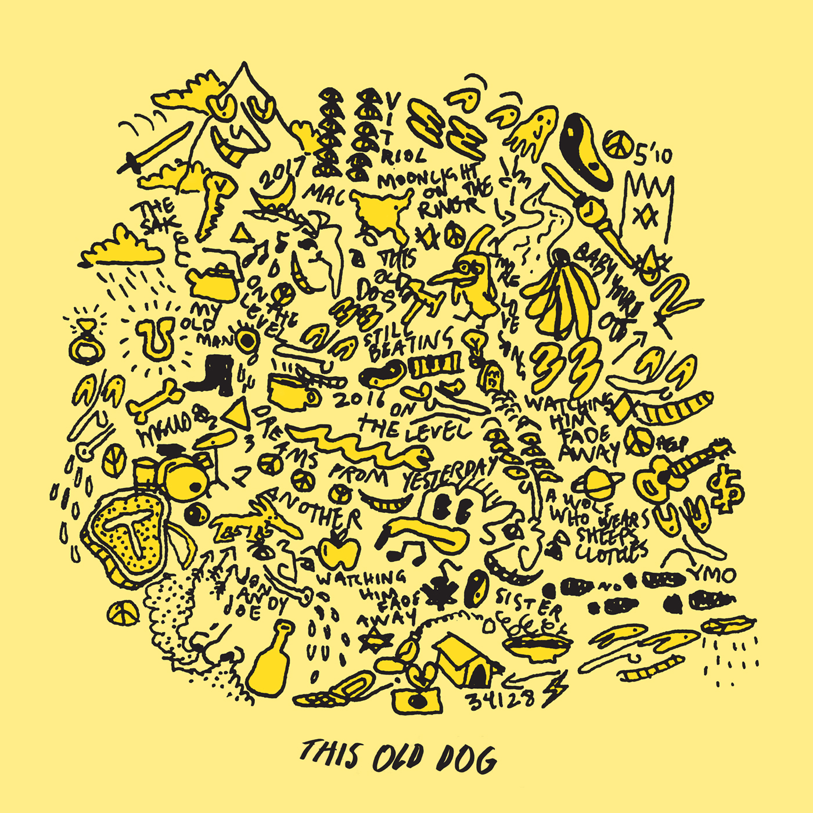

My favourite artist is Daniel Ceaser. He is a singer-songwriter known for his narrative songwriting and has won numerous awards for his music.
He has released four successful albums over the years.
His most popular songs include "Disillusioned","Toronto 2014", "Get you" and "Superpowers".
My second favourite artist is Mac Demarco. He is a Canadian singer-songwriter and multi-instrumentalist known for his unique style and laid-back approach to music.
He has released several albums and is known for his hit songs like "No Other Heart", "Chamber of Reflection", and "My Kind of Woman".
His most popular song is "No Other Heart".
